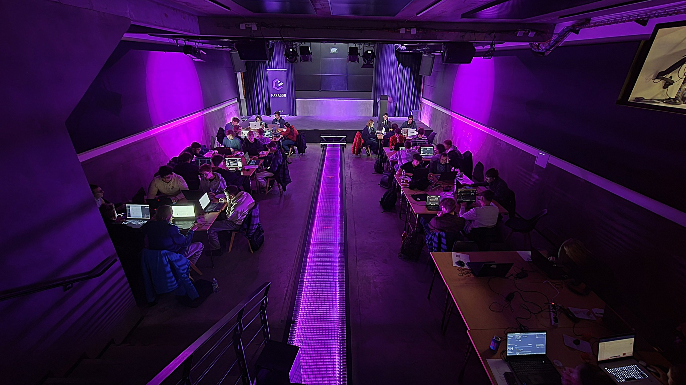
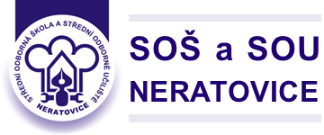
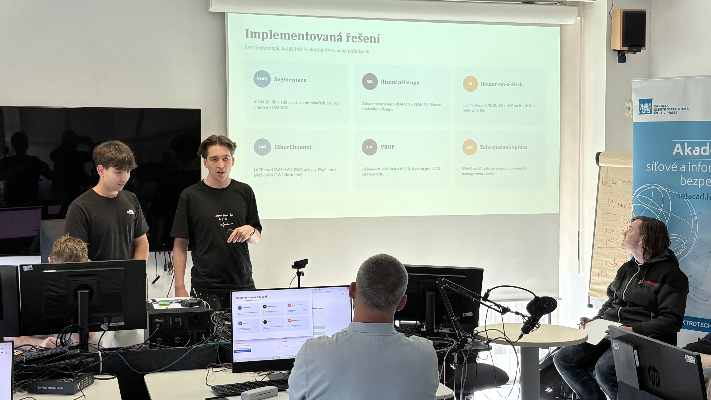
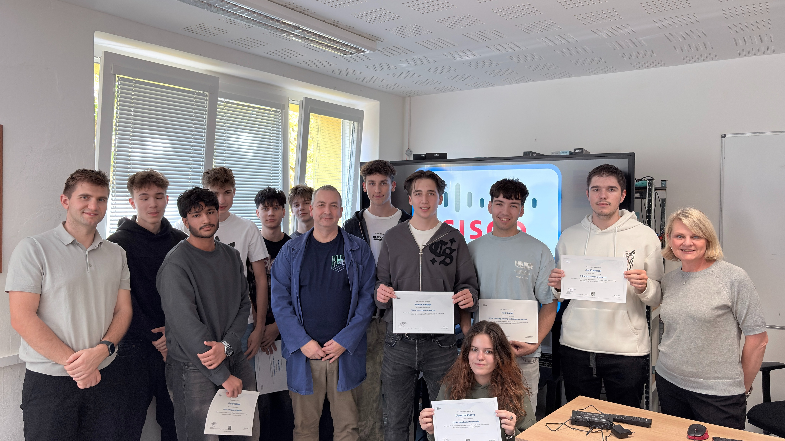

Soutěž Haxagon
Týmová soutěž v kyberbezpečnosti. Luštíš úlohy, hledáš chyby v systémech a poměřuješ síly se školami z celé republiky.
Soutěže
IT NeratoviceIT NeratoviceMaturitní obor 18-20-M/01 na SOŠ a SOU Neratovice: programování, počítačové sítě, operační systémy a hardware v jednom studiu.

Vyber si oblast a uvidíš, co v ní zvládneš.
Soutěže, praktika, praxe i 3D tisk. Tohle všechno tě na oboru čeká.

Týmová soutěž v kyberbezpečnosti. Luštíš úlohy, hledáš chyby v systémech a poměřuješ síly se školami z celé republiky.
Soutěže
Na čas hledáš a opravuješ závady v počítačové síti. Přesně to, co potřebuje každý správce sítí.
Soutěže
Zapojuješ switche a routery, nastavuješ adresy a zkoušíš, jak se zprávy dostanou z jednoho počítače na druhý a můžeš získati cisco certifikaci.
SítěDalší fotky a novinky ze života školy najdeš na Facebooku, Instagramu a Rajčeti školy.
Absolvent se uplatní jako:
A pokud chceš pokračovat dál, maturita ti otevírá cestu na vysokou školu.
SOŠ a SOU Neratovice
Spojovací 664, Neratovice
Telefon: +420 313 100 700
E-mail: sekretariat@sosasou.cz